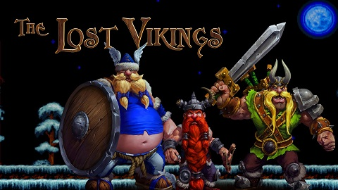

The lost vikings
 הויקינגים האבודים
משחק כל כך ישן שהוא בערך ממתי שנולדתי. הפיקסלים ממש בולטים בתמונה, אך זה לא העניין במשחק. זה בין המשחקים היותר קשים שיצא לי לשחק במחשב, מה שצריך לעשות זה לשלוט בשלושה ויקינגים מצחיקים ממש ולפתור חידות הזויות בעזרתם, הבעיה העיקרית במשחק הזה היא לשלוט בשלושתם ביחד, לכל אחד מהם יש מטרה אחרת בפתרון החידות. ביליתי שעות במשחק הזה רץ וקופץ כמו דייב אבל דמויות שנראות כמו אסטריקס ואובליסק כמובן שגם את המשחק הזה הייתי משחק עם הבני דודים, מידיי פעם היינו עוזרים אחד לשני לעבור שלבים קשים.